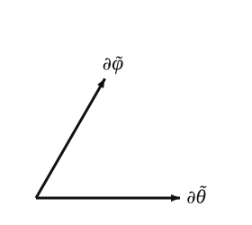
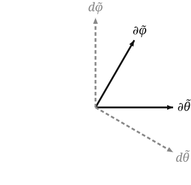

The skew chart in this book is defined so its grid is visibly tilted relative to the standard chart — the longitude circles are sheared, the latitude circles stay horizontal. (See the diagram on the previous page.) The tilt parameter is fixed throughout: α=π/8≈22.5°.
The simplest definition that gives that picture keeps the standard θ and shears the longitude:
θ~:=θ,φ~:=φ+αcosθ.
The shift by αcosθ is largest at the poles and zero at the equator, producing the visible tilt of the longitude curves. The Jacobian of (θ,φ)↦(θ~,φ~) is everywhere non-singular (det=1), so this is a valid chart wherever the standard one is.
In terms of the standard basis vectors ∂θ,∂φ evaluated at the same point in S2, the chain rule gives
∂θ~=∂θ+αsinθ~∂φ,∂φ~=∂φ.
This is more compact and more informative than the embedded formula. The skew basis vector ∂φ~ is the same tangent vector as the standard ∂φ (because ∂/∂φ~=∂/∂φ with θ held fixed). The skew ∂θ~ is the standard ∂θplus a contribution along ∂φ proportional to αsinθ~. The shear scales with sinθ — zero at the poles, maximum at the equator.
At θ~=π/2 (equator) and α=π/8 the cosine is α/1+α2≈0.366, so the angle is about 69° — visibly off-90°.
At the sample point
With θ~0=θ0=13π/32,φ~0=φ0+αcosθ0:
∣∂θ~∣2=1+α2sin4θ~0≈1+(π/8)2(0.981)4≈1.143.
∣∂φ~∣2=sin2θ~0≈0.962.
cos∠≈1.143(π/8)(0.981)2≈0.353,
so the angle is about 69.3°.
The tangent-plane diagram in the skew chart:

The diagram exaggerates the obliqueness slightly (it’s drawn at 60° for visual clarity), but the qualitative picture is right: the basis pair is sheared compared to the standard chart.
Dual basis
The dual basisdθ~,dφ~ is defined by dθ~(∂θ~)=1, dθ~(∂φ~)=0, etc. In an orthogonal coordinate system, the dual basis is simply parallel to the coordinate basis (up to scaling). In a non-orthogonal system, it is not — each dual covector is perpendicular to the other coordinate axis, not to its own.
Concretely:
dθ~ is perpendicular to ∂φ~, not to ∂θ~.
dφ~ is perpendicular to ∂θ~, not to ∂φ~.

The angle between dθ~ and dφ~ is also not π/2 — it is the same angle as between ∂θ~ and ∂φ~, by a symmetric argument. (Both bases lie in the same 2-dimensional space; the chart’s “shear” affects both.)
Coordinate functions
To complete the picture: what are the coordinate functions θ~,φ~ on S2, regarded as smooth real-valued functions of points? They are
θ~(p)=θ(p),φ~(p)=φ(p)+αcosθ(p),
with θ,φ the standard coordinate functions. These are explicit functions of position, and dθ~,dφ~ are their differentials in the usual sense.
The next page works out the relation between the two charts — the Jacobian, and what it means to transform components between them.